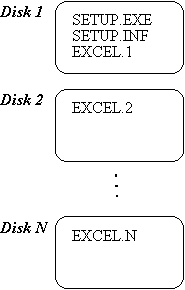

|
| ||
|
| ||
Version 1.01
Microsoft Corporation
March 20, 1997
Contents
Overview
Case 1: MakeCAB for Setup Programs
Case 2: MakeCAB for a 200 MB Source Code Archive
Case 3: Self-Extracting Cabinet File(s)
MakeCAB Deliverables
MakeCAB Goals
MakeCAB Optimizing and Tuning
Saving Diskettes
Tuning Access Time vs. Compression Ratio
Piecemeal DDFs for Localization and Different Disk Sizes
MakeCAB Concepts
Decoupling File Layout and INF Layout
MakeCAB .EXE
MakeCAB.EXE Syntax
MakeCAB.EXE Directive File Syntax
Extract.EXE
MakeCAB is a lossless data compression tool that can be used for a wide variety of purposes. Although it was originally designed for use by setup programs, it can also be used in almost any situation where lossless data compression is required.
MakeCAB has three key features: 1) storing multiple files in a single cabinet ("CAB") file, 2) performing compression across file boundaries, and 3) permitting files to span cabinets. While existing products such as PKZIP, LHARC, and ARJ support some of these features, combining all three does not appear to be common practice. MakeCAB also supports self-extracting archives, by simply concatenating a cabinet file to EXTRACT.EXE.
Depending upon the number of files to be compressed, and the access patterns expected (sequential or random access; whether most of the files will be requested at once or only a small portion of them), MakeCAB can be instructed to build cabinet files in different ways. One key concept in MakeCAB is the folder. A folder is a collection of one or more files that are compressed together, as a single entity.
The cabinet file format is capable of supporting multiple forms of compression. However, at this time, MSZIP is the compression format supported by Microsoft. Other compression formats are possible in the future.
The following sections provide case studies of several possible ways that MakeCAB might be used. These are only provided to stimulate your imagination -- they are not the only ways in which MakeCAB can be used!
Since MakeCAB was designed with setup programs in mind, it has a great deal of power and flexibility to trade off compressed size against speed of random access to files. The primary impact of MakeCAB is to minimize the number of diskettes required to distribute a product, thereby minimizing the Cost of Goods Sold (COGS).
In order for MakeCAB to build the disk images for a product, a MakeCAB directive file -- which specifies the list of files in a product, and any constraints on which disks certain files should be located -- must be created. The same MakeCAB Directive File can even be used for all the various localized versions of a product, because directive files support parameterization.
The distribution disks for a typical application product like Microsoft Excel produced by MakeCAB might look similar to the following:

Figure 1: Distribution disk layout
SETUP.EXE is the setup program, and SETUP.INF is a file generated by MakeCAB that guides the operation of the setup program (which files are needed for which options, and on which disk and in which cabinet file a file is contained). All of the remaining product files are contained in the cabinet files EXCEL.1 through EXCEL.N (N might be 7, for example).
To produce this disk layout with MakeCAB, a MakeCAB Directive File (DDF) is prepared that lists all of the files for Microsoft Excel, along with some optional MakeCAB settings to control parameters such as: 1) the capacity of the disks being used, 2) the naming convention of the cabinet files, 3) the visible (user-readable) labels on each disk, and 4) how much random access is desired for files within a cabinet. The following is an example of a DDF that might be appropriate for Microsoft Excel:
;*** EXCEL MakeCAB Directive file example ; .OPTION EXPLICIT ; Generate errors on variable typos .Set DiskLabel1=Setup ; Label of first disk .Set DiskLabel2=Program ; Label of second disk .Set DiskLabel3="Program Continued" ; Label of third disk .Set CabinetNameTemplate=EXCEL.* ; EXCEL.1, EXCEL.2, etc. .set DiskDirectoryTemplate=Disk* ; disk1, disk2, etc. .Set MaxDiskSize=1.44M ; 3.5" disks ;** Setup.exe and setup.inf are placed uncompressed in the first disk .Set Cabinet=off .Set Compress=off .Set InfAttr= ; Turn off read-only, etc. attrs bin\setup.exe ; Just copy SETUP.EXE as is bin\setup.inf ; Just copy SETUP.INF as is ;** The rest of the files are stored, compressed, in cabinet files .Set Cabinet=on .Set Compress=on bin\excel.exe ; Big EXE, will span cabinets bin\excel.hlp bin\olecli.dll bin\olesrv.dll ;... ; Many more files ;*** <the end> ; That's it
Now, you run MakeCAB to create the disk layout:
MakeCAB /f excel.ddf
MakeCAB will create directories Disk1, Disk2, and so forth, to hold the files for each disk, and will copy uncompressed files or create cabinet files (as appropriate) in each directory. The file SETUP.RPT will be written to the current directory (this can be overridden) with a summary of what MakeCAB did, and the file SETUP.INF will contain details on every disk and cabinet created, including a list of where each file was placed.
The Microsoft Developers Network (MSDN) CD includes 200 MB of source code. Although uncompressed this is only one-third of the CD, that is still too much space; so tight compression is desired. This is slightly different from the Setup case, however, because there is a front-end tool that allows users to select sample programs and expand them onto the hard disk.
The cabinet files produced for the source archive need to be big enough to provide good compression, but not so big that random access speed is sacrificed. The challenge is to obtain a good tradeoff between compression and access time.
;*** MSDN Sample Source Code MakeCAB Directive file example
;
.OPTION EXPLICIT ; Generate errors on variable typos
.Set CabinetNameTemplate=MSDN.* ; MSDN.1, MSDN.2, etc.
.set DiskDirectoryTemplate=CDROM ; All cabinets go in a single directory
.Set MaxDiskFileCount=1000 ; Limit file count per cabinet, so that
; scanning is not too slow
.Set FolderSizeThreshold=200000 ; Aim for ~200K per folder
.Set CompressionType=MSZIP
;** All files are compressed in cabinet files
.Set Cabinet=on
.Set Compress=on
foo.c
foo.h
....
;*** <the end> ; That's it
Many times, a software developer will want to ship executables, libraries, or the like across an intranet or the Internet. They need a small package and an easy way for users to extract data. For example, Java developers may want to ship large libraries of classes, so that home and business developers can use those classes in their software.
The program that extracts files from CAB files, EXTRACT.EXE, recognizes when it has been copied to the front of a cabinet file, and will automatically extract the files in that cabinet file (and any continuation cabinet files). Here is how this is accomplished:
Example 1:
MakeCAB /f self.ddf ; Build cabinet file set self1.cab, self2.cab copy /b extract.exe+self1.cab self.exe ; self.exe is self-extracting
The following table is a list of all the libraries and programs that are part of MakeCAB:
| File | Contents |
| MakeCAB.EXE | Command-line tool to perform disk layout (uses FCI.LIB) |
| FDI.LIB | File Decompression Interface library (uses MDI.LIB). |
| EXTRACT.EXE | Command-line tool to expand files (uses FDI.LIB) |
| DDUMP.EXE | Tool to dump internal format of a MakeCAB cabinet file |
| FCI.LIB | File Compression Interface library (uses MCI.LIB). |
| MCI.LIB | MSZIP Memory Compression Interface library. |
| MDI.LIB | MSZIP Memory Decompression Interface library. |
For a product shipped on floppy disks, it is very important to minimize the number of disks shipped per product! As a back-of-the-envelope calculation, if each disk cost a dollar and one million units were shipped, then each disk saved would save $1 million. The following pseudo-code suggests a process you might follow as you strive to keep your Cost of Goods Sold (COGS) to a minimum:
get initial product files;
while (have not yet shipped)
//** Figure out smallest possible size
Compress file set using:
CompressionType=MSZIP
If near a disk boundary
Consider tossing files to save a disk (especially clipart & samples!)
If near shipping
Relax FolderSizeThreshold to
improve access time at decompress.
end-while
Ship it!
MakeCAB introduces the concept of a folder to refer to a contiguous set of compressed bytes. To decompress a file from a cabinet, FDI.LIB (called by SETUP.EXE and EXTRACT.EXE) finds the folder that the file starts in, and then must read and decompress all the bytes in that folder from the start-up through and including the desired file.
For example, if the file FOO.EXE is at the end of a 1.44 MB folder on a 1.44 M diskette, then FDI.LIB must read the entire diskette and decompress all the data. This is about the worst access time possible. By contrast, if FOO.EXE were at the start of a folder (regardless of how large the folder is), then it would be read and decompressed with no extra overhead.
So, why would one not always Set FolderFileCountThreshold=1? Because doing so would reset the compression history after each file, resulting in a poor compression ratio. MakeCAB provides several variables and directives to provide very fine control over these issues:
| Variable/Directive | More Compression; Slower Access Time | Less Compression;Faster Access Time |
| CabinetFileCountThreshold | Bigger numbers | Lower numbers |
| FolderFileCountThreshold | Bigger numbers | Lower numbers |
| FolderSizeThreshold | Bigger numbers | Lower numbers |
| MaxCabinetSize | Bigger numbers | Lower numbers |
| .New Folder | Don't use | Use often |
| .New Cabinet | Don't use | Use often |
The MakeCAB defaults are configured for a floppy disk layout, with the assumption that the most common scenario is a full setup that will extract most of the files, so these are the settings:
| Variable/Directive | Value |
| CabinetFileCountThreshold | Unlimited |
| FolderFileCountThreshold | Unlimited |
| FolderSizeThreshold | Same as MaxCabinetSize |
| MaxCabinetSize | Same as MaxDiskSize |
For the MSDN source archive (>200 MB of sample source code, >30,000 files) that ships on a CD-ROM, the following values might be a reasonable tradeoff between compression and access time:
| Variable/Directive | Value |
| CabinetFileCountThreshold | 2000 (Since we have to call FDICopy() on a cabinet and walk through all the FILE headers, we want this small enough so that isn't too much overhead, but large enough to keep the number of cabinets down.) |
| FolderFileCountThreshold | Unlimited (Let FolderSizeThreshold control folder size!) |
| FolderSizeThreshold | 200K (Represents 600K-800K of source (assuming 3:1 or 4:1 compression ratio) |
| MaxCabinetSize | Unlimited (Let CabinetFileCountThreshold control the cabinet size!) |
Of course, if you are tight for space on your CD-ROM, you'll probably boost the FolderSizeThreshold and CompressionMemory settings!
MakeCAB.EXE was designed to minimize the amount of duplicate information needed to generate product layouts for different languages and disk sizes. A key feature is the ability to specify more than one DDF on the MakeCAB.EXE command line. For example:
| acme.ddf | Some standard definitions to control the format of the output INF file |
| lang.ddf | Sets language-specific settings (SourceDir, for example) |
| disk.ddf | Sets the diskette sizes (CDROM, 1.2M, 1.44M, etc.) |
| product.ddf | Lists all the files in the product, and uses variables set in the previous DDFs to customize its operation |
The following command line would be used to process this set of DDFs:
MakeCAB /f acme.ddf /f lang.ddf /f disk.ddf /f product.ddf
The key feature of MakeCAB is that it takes a set of files and produces a disk layout while at the same time attempting to minimize the number of disks required. In order to understand how MakeCAB does this, three terms need to be defined: cabinet, folder, and file. MakeCAB takes all of the files in the product or application being compressed, lays the bytes down as one continuous byte stream, compresses the entire stream, chopping it up into folders as appropriate, and then fills up one or more cabinets with the folders.
Cabinet -- A normal file that contains pieces of one or more files, usually compressed. Also known as a "CAB file".
Folder -- A decompression boundary. Large folders enable higher compression, because the compressor can refer back to more data in finding patterns. However, to retrieve a file at the end of a folder, the entire folder must be decompressed. So there is a tradeoff between achieved compression and the quickness of random access to individual files.
File -- A file to be placed in the layout.
MakeCAB has two "modes" for generating the INF file; unified mode and relational mode. In unified mode, the INF file is generated as file copy commands are processed in the DDF file. This is the default, and minimizes the amount of effort needed to construct a DDF file. However, this forces the INF file to list the files in the layout in exactly the same order as they are placed on disks/cabinets.
Example of a unified DDF:
;** Set up INF formats before we do the disk layout, because MakeCAB
; writes Disk and Cabinet information out as it is generated.
.OPTION EXPLICIT ; Generate errors for undefined variables
.Set InfDiskHeader="[disk list]"
.Set InfDiskHeader1=";<disk number>,<disk label>"
.Set InfDiskLineFormat="*disk#*,*label*"
.Set InfCabinetHeader="[cabinet list]"
.Set InfCabinetHeader1=";<cabinet number>,<disk number>,<cabinet file name>"
.Set InfCabinetLineFormat="*cab#*,*disk#*,*cabfile*"
.Set InfFileHeader=";*** File List ***"
.Set InfFileHeader1=";<disk number>,<cabinet number>,<filename>,<size>"
.Set InfFileHeader2=";Note: File is not in a cabinet if cab# is 0"
.Set InfFileHeader3=""
.Set InfFileLineFormat="*disk#*,*cab#*,*file*,*date*,*size*"
.set GenerateInf=ON ; Unified mode - create the INF file as we go
;** Setup files. These don't need to be in the INF file, so we put
; /inf=NO on these lines so that MakeCAB won't generate an error when
; it finds that these files are not mentioned in the INF portion of
; the DDF.
.set Compress=OFF
.set Cabinet=OFF
setup.exe /inf=NO ; This file doesn't show up in INF
setup.inf /inf=NO ; This file doesn't show up in INF
;** Files in cabinets
.set Compress=ON
.set Cabinet=ON
;* Put all bitmaps together to help compression
a1.bmp ; Bitmap for client1.exe
b1.bmp ; Bitmap for client1.exe
c1.bmp ; Bitmap for client1.exe
d1.bmp ; Bitmap for client1.exe
a2.bmp ; Bitmap for client1.exe
b2.bmp ; Bitmap for client2.exe
c2.bmp ; Bitmap for client2.exe
d2.bmp ; Bitmap for client2.exe
shared.dll /date=10/12/93 ; File needed by client1.exe and client2.exe
client1.exe ; needs shared.dll
client2.exe ; needs shared.dll
;*** The End
In relational mode the DDF has file reference lines to specify the exact placement of file information lines, including the ability to list the same file multiple times. This feature is important for INF structures which use section headers (e.g. "[clipart]", "[screen savers]") to identify sets of files for particular functionality, and for which the same file may need to be included in more than one section. For example, a product may have several optional features, all of which require a DLL file named "shared.dll". Rather than having "shared.dll" stored multiple times (once for each section which uses the file), a waste of disk space, a single copy of the file can be stored, and then referenced by all of the sections which require it.
A relational mode DDF is similar to a unified mode DDF, with the exception that a ".set GenerateInf=OFF" line must be inserted before the product's files are listed (as shown below). Once all of the files have been listed, the INF file generating portion of the DDF begins, and a ".set GenerateInf=ON" line must be inserted, followed by the section definitions.
Example of a relational DDF:
;** Set up INF formats before we do the disk layout, because MakeCAB
; writes Disk and Cabinet information out as it is generated.
.OPTION EXPLICIT ; Generate errors for undefined variables
.Set InfDiskHeader="[disk list]"
.Set InfDiskHeader1=";<disk number>,<disk label>"
.Set InfDiskLineFormat="*disk#*,*label*"
.Set InfCabinetHeader="[cabinet list]"
.Set InfCabinetHeader1=";<cabinet number>,<disk number>,<cabinet file name>"
.Set InfCabinetLineFormat="*cab#*,*disk#*,*cabfile*"
.Set InfFileHeader=";*** File List ***"
.Set InfFileHeader1=";<disk number>,<cabinet number>,<filename>,<size>"
.Set InfFileHeader2=";Note: File is not in a cabinet if cab# is 0"
.Set InfFileHeader3=""
.Set InfFileLineFormat="*disk#*,*cab#*,*file*,*date*,*size*"
;
; *** Here is where we list all the files
;
.set GenerateInf=OFF ; RELATIONAL MODE - Do disk layout first
;** Setup files. These don't need to be in the INF file, so we put
; /inf=NO on these lines so that MakeCAB won't generate an error when
; it finds that these files are not mentioned in the INF portion of
; the DDF.
.set Compress=OFF
.set Cabinet=OFF
setup.exe /inf=NO ; This file doesn't show up in INF
setup.inf /inf=NO ; This file doesn't show up in INF
;** Files in cabinets
;
.set Compress=ON
.set Cabinet=ON
;* Put all bitmaps together to help compression
a1.bmp ; Bitmap for client1.exe
b1.bmp ; Bitmap for client1.exe
c1.bmp ; Bitmap for client1.exe
d1.bmp ; Bitmap for client1.exe
a2.bmp ; Bitmap for client1.exe
b2.bmp ; Bitmap for client2.exe
c2.bmp ; Bitmap for client2.exe
d2.bmp ; Bitmap for client2.exe
shared.dll /date=10/12/93 ; File needed by client1.exe and client2.exe
client1.exe ; needs shared.dll
client2.exe ; needs shared.dll
;
; *** Now we're generating the INF file
;
.set GenerateInf=ON
;** Feature One files
.InfBegin File
[feature One]
;Files for feature one
.InfEnd
client1.exe
shared.dll /date=04/01/94 ; Override date
a1.bmp
b1.bmp
c1.bmp
d1.bmp
;** Feature Two files
.InfBegin File
[feature Two]
;Files for feature Two
;Note that shared.dll is also required by Feature One
.InfEnd
client1.exe
shared.dll
a2.bmp
b2.bmp
c2.bmp
d2.bmp
;*** The End
The generated INF file would look something like this:
[disk list]
;<disk number>,<disk label>
1,"Disk 1"
[cabinet list]
;<cabinet number>,<disk number>,<cabinet file name>
1,1,cabinet.1
;*** File List ***
;<disk number>,<cabinet number>,<filename>,<size>
;Note: File is not in a cabinet if cab# is 0
[feature One]
;Files for feature one
1,1,client1.exe,12/12/93,1234
1,1,shared.dll,04/01/94,1234
1,1,a1.bmp,12/12/93,573
1,1,b1.bmp,12/12/93,573
1,1,c1.bmp,12/12/93,573
1,1,d1.bmp,12/12/93,573
[feature Two]
;Files for feature Two
;Note that shared.dll is also required by Feature One
1,1,client1.exe,12/12/93,1234
1,1,shared.dll,10/12/93,1234
1,1,a2.bmp,12/12/93,643
1,1,b2.bmp,12/12/93,643
1,1,c2.bmp,12/12/93,643
1,1,d2.bmp,12/12/93,643
Notes
;* layout portion bar /x=1 ... ;* INF portion bar /x=2 ; INF file will have value 2
MakeCAB.EXE is designed to produce the final distribution files and cabinets for an entire product in a single run. The most common way to use MakeCAB.EXE is to supply a directives file that controls how files are compressed and stored into one or more cabinets.
There two primary forms of MakeCAB.EXE usage. The first is used for compressing a single file, while the second is used for compressing multiple files.
MakeCAB [/Vn] [/D variable=value ...] [/L directory] source [destination] MakeCAB [/Vn] [/D variable=value ] /F directives_file [...]
The parameters are described below.
| Parameter | Description |
| source | A file to be compressed. |
| destination | The name of the file to receive the compressed version of the source file. If not supplied, a default destination name is constructed from the source file name according to the rules defined by the CompressedFileExtensionChar variable. You can use /D CompressedFileExtensionChar=c on the command line to change the appended character. |
| /D variable=value | Set variable to be equal to value. Equivalent to using the .Set command in the directives file. For example, a single directive file could be used to produce layouts for different disk sizes by running MakeCAB once with different values of MaxDiskSize defined: /D MaxDiskSize=1.44M. Both standard MakeCAB variables and custom variables may be defined in this way. If .Option Explicit is specified in a directive file, then variable must be defined with a .Define command in a directive file. |
| /L directory | Specifies an output directory where the compressed file will be placed (most useful when destination is not supplied). |
| /F directives_file | A file containing commands for MakeCAB.EXE to execute. If more than one directive file is specified (/F file1 /F file2 ...), they are processed in the order (left to right) specified on the command line. Variable settings, open cabinets, open disks, etc. are all carried forward from one directive file to the next (just as if all of the files had been concatenated together and presented as a single file to MakeCAB). For example, this is intended to simplify the work for a product shipped in multiple languages. There would be a short, language-specific directives file, and then a single, large master directives file that covers the bulk of the product. |
| /Vn | Set debugging verbosity level (0=none,...,3=full) |
Before diving into the details of the syntax of the directives file, provided here is an example of what the Excel directives file might look like:
;*** EXCEL MakeCAB Directive file ; .Set DiskLabel1=Setup ; Label of first disk .Set DiskLabel2=Program ; Label of second disk .Set DiskLabel3="Program Continued" ; Label of third disk .Set CabinetNameTemplate=EXCEL*.CAB ; EXCEL1.CAB, EXCEL2.CAB, etc. .Set MaxDiskSize=1.44M ; 3.5" disks ;** Setup.exe and setup.inf are placed uncompressed in the first disk .Set Cabinet=off .Set Compress=off bin\setup.exe ; Just copy SETUP.EXE as is bin\setup.inf ; Just copy SETUP.INF as is ;** The rest of the files are stored, compressed, in cabinet files .Set Cabinet=on .Set Compress=on bin\excel.exe ; Big EXE, will span cabinets bin\excel.hlp bin\olecli.dll bin\olesrv.dll ...
Here are some additional notes on the general syntax and behavior of MakeCAB Directive Files.
The following table provides a summary of the MakeCAB Directive File syntax. Directives begin with a period ("."), followed by a command name, and possibly by blank delimited arguments. Note that a File Copy command is distinguished from a File Reference command by the setting of the GenerateInf variable.
| Syntax | Description |
| ; | Comment (anywhere on a DDF line) |
| src [dest] [/inf=yes|no] [/unique=yes|no] [/x=y [/x=y ...]] | File Copy command |
| destination [/x=y [/x=y ...]] | File Reference command |
| .Define variable=[value] | Define variable to be equal to value (see .Option Explicit) |
| .Delete variable | Delete a variable definition |
| .Dump | Display all variable definitions |
| .InfBegin Disk | Cabinet | File | Copy lines to specified INF file section |
| .InfEnd | End an .InfBegin section |
| .InfWrite string | Write "string" to file section of INF file |
| .InfWriteCabinet string | Write "string" to cabinet section of INF file |
| .InfWriteDisk string | Write "string" to disk section of INF file |
| .New Disk | Cabinet | Folder | Start a new Disk, Cabinet, or Folder |
| .Option Explicit | Require .Define first time for user-defined variables |
| .Set variable=[value] | Set variable to be equal to value |
| %variable% | Substitute value of variable |
| <blank line> | Blank lines are ignored |
| Standard Variables | Description |
| Cabinet=ON | OFF | Turns Cabinet Mode on or off |
| CabinetFileCountThreshold=count | Threshold count of files per Cabinet |
| CabinetNamen=filename | Cabinet file name for cabinet number n |
| CabinetNameTemplate=template | Cabinet file name template; * is replaced by Cabinet number |
| ChecksumWidth=1 | 2 | ... | 8 | Max low-order hex digits displayed by INF csum parameter |
| ClusterSize=bytesPerCluster | Cluster size on diskette (default is 512 bytes) |
| Compress=ON | OFF | Turns compression on or off |
| CompressedFileExtensionChar=char | Last character of the file extension for compressed files |
| CompressionType=MSZIP | Compression engine |
| DestinationDir=path | Default path for destination files (stored in cabinet file) |
| DiskDirectoryn=directory | Output directory name for disk n |
| DiskDirectoryTemplate=template | Output directory name template; * is replaced by disk number |
| DiskLabeln=label | Printed disk label name for disk n |
| DiskLabelTemplate=template | Printed disk label name template; * is replaced by disk number |
| DoNotCopyFiles= ON | OFF | Controls whether files are actually copied (ACME ADMIN.INF) |
| FolderFileCountThreshold=count | Threshold count of files per Folder |
| FolderSizeThreshold=size | Threshold folder size for current folder |
| GenerateInf=ON | OFF | Control Unified vs. Relation INF generation mode |
| InfXxx=string | Set default value for INF Parameter Xxx |
| InfCabinetHeader[n]=string | INF cabinet section header text |
| InfCabinetLineFormat[n]=format string | INF cabinet section detail line format |
| InfCommentString=string | INF comment string |
| InfDateFormat=yyyy-mm-dd | mm/dd/yy | INF date format |
| InfDiskHeader[n]=string | INF disk section header text |
| InfDiskLineFormat[n]=format string | INF disk section detail line format |
| InfFileHeader[n]=string | INF file section header text |
| InfFileLineFormat[n]=format string | INF file section detail line format |
| InfFileName=filename | Name of INF file |
| InfFooter[n]=string | INF footer text |
| InfHeader[n]=string | INF header text |
| InfSectionOrder=[D | C | F]* | INF section order (disk, cabinet, file) |
| MaxCabinetSize=size | Maximum cabinet file size for current cabinet |
| MaxDiskFileCount=count | Maximum count of files per Disk |
| MaxDiskSize[n]=size | Maximum disk size |
| MaxErrors=count | Maximum errors allowed before pass 1 terminates |
| ReservePerCabinetSize=size | Base amount of space to reserve for FCRESERVE data |
| ReservePerDataBlockSize=size | Amount of space to reserve in each data block |
| ReservePerFolderSize=size | Amount of additional space in FCRESERVE for each folder |
| RptFileName=filename | Name of RPT file |
| SourceDir=path | Default path for source files |
| UniqueFiles=ON | OFF | Control whether duplicate destination file names are allowed |
The InfDiskLineFormat, InfCabinetLineFormat, and InfFileLineFormat variables are used to control the formatting of the "detail" lines in the INF file. The syntax of the values assigned to these variables is as follows:
| id | file | size | Output String |
| foo.dat | 23 | foo.dat,23 | |
| 17 | foo.dat | 23 | 17,foo.dat,23 |
| 17 | 23 | 17,,23 |
The following table lists the standard parameters that may be specified in INF line formats and on File Copy and File Reference commands. The Disk, Cab, and File columns indicate which parameters are supported in the InfDiskLineFormat, InfCabinetLineFormat, and InfFileLineFormat, respectively. In addition, the File column also indicates which parameters may be specified on the File Copy and File Reference commands.
| Parameter | Disk | Cab | File | Description |
| attr | Yes | File attributes (A=archive, R=read-only, H=hidden, S=system) | ||
| cab# | Yes | Yes | Cabinet number (0 means not in cabinet, 1 or higher is cabinet number) | |
| cabfile | Yes | Cabinet file name | ||
| csum | Yes | Checksum | ||
| date | Yes | File date (mm/dd/yy or yyyy-mm-dd, depending upon InfDateFormat) | ||
| disk# | Yes | Yes | Yes | Disk number (1-based) |
| file | Yes | Destination file name in layout (in cabinet or on a disk) | ||
| file# | Yes | Destination file number in layout (first file is 1, second file is 2, ...); the order of File Copy Commands controls the file number, so in relational INF mode the order of File Reference Commands has no affect on the file number. | ||
| label | Yes | Disk user-readable label (value comes from DiskLabeln, if defined, and otherwise is constructed from DiskLabelTemplate). | ||
| lang | Yes | Language (i.e., VER.DLL info) in base 10, blank separated if multiple values | ||
| size | Yes | File size (only affects value written to INF file) | ||
| time | Yes | File time (hh:mm:ss[a|p]) | ||
| ver | Yes | Binary File version (n.n.n.n base 10 format) | ||
| vers | Yes | String File version -- can be different from ver! |
Just as custom INF parameters can be defined by using the .Define and .Set command (e.g., .Set InfCustom=default value), the .Set command can also be used to override the values of these parameters. This is most obviously useful for the date and time parameters, as it provides a simple way to "date stamp" all the files in a layout; and for the attr parameter, this provides a way to force a consistent set of file attributes (commonly used to clear the read-only and archive attribute bits).
;
A comment line.
A comment may appear anywhere in a directive file. In addition, any line may include a comment at the end. Any text on the line following the comment is ignored.
source [destination] [/INF= YES | NO] [/UNIQUE=YES | NO] [/x=y [/x=y ...]]
A File Copy Command; specifies a file to be placed onto a disk or cabinet. If GenerateInf is OFF, then lines without leading periods are interpreted as File Copy Commands.
source is a file name, and may include a relative or absolute path specification. The SourceDir variable is applied first, if specified.
destination is the name to store in the cabinet file (if Cabinet is On), or the name for the destination file (if Cabinet is Off). The DestinationDir variable is used as a prefix.
/INF=YES | NO controls whether destination must specified in a Reference command in the INF section of the DDF. If YES is specified (the default), then destination must be specified in at least one Reference command. If NO is specified, then destination does not have to be specified in any Reference command. This parameter is used only if Relational INF mode is selected (see the GenerateInf variable), as Unified mode does not support Reference commands.
/UNIQUE=YES | NO controls whether destination must be unique throughout the layout. Specifiying this parameter on the file copy command overrides the default setting controlled by the UniqueFiles variable (which defaults to YES). If Relational INF mode is selected (see the GenerateInf variable), then UniqueFiles must be YES.
/x=y permits standard and custom INF parameters to be applied to a file copy command. These parameters are carried along with the file by MakeCAB and used to format file detail lines in the INF file. In addition, the /Date, /Time, and /Attr parameters also control the values that are placed in the cabinet files or on the disk layout (for files outside of a cabinet). This permits a great deal of flexibility in customizing the INF file format. A parameter "x" is defined to have the value "y" (which may be empty). Quotes can be used in "y" to include blanks or other special characters. If a parameter "x" is also defined on a File Reference command, that setting overrides any setting for "x" specified on the referred to File Copy command. See "" on page for a list of standard parameters.
NOTE: You must define a variable InfX if you are going to use /X=y on a File Copy (or File Reference) command. If no such variable is defined, then /X=y will generate an error. This behavior ensures that there is a default value for every parameter, and makes it easier to catch inadvertent typing errors.
If the destination is not specified, its default value depends upon the Cabinet and Compress variables, as indicated by the following table, using BIN\EXCEL.EXE as a sample source file name. Note that the variable CompressedFileExtensionChar controls the actual character used to indicate a compressed file. Note also that the DestinationDir variable is prefixed to the destination name before it is stored in the cabinet file.
| Compress = OFF | Compress = ON | |
| Cabinet = OFF | EXCEL.EXE -- uncompressed, not in a cabinet. | EXCEL.EX_ -- compressed, not in cabinet (actually, this is a cabinet with a single file!) |
| Cabinet = ON | EXCEL.EXE -- uncompressed, in a cabinet. | EXCEL.EXE -- compressed, in a cabinet |
Examples:
.Set Compress=OFF ; Turn off compression .Set Cabinet=OFF ; No cabinet file setup.exe /inf=no ; Setup is put on disk 1, won't be in INF setup.inf ; Classic chicken & the egg problem .Set Compress=ON ; Turn compression on readme.txt ; Placed on disk 1 as README.TX_ .Set Cabinet=ON ; Turn cabinet file creation on bin\excel.exe ; Placed in cabinet as EXCEL.EXE msdraw.exe msapps\msdraw.exe ; Placed in cabinet as MSAPPS\MSDRAW.EXE a.txt dup.txt /unique=no ; Another dup.txt is allowed b.txt dup.txt /unique=no ; And here it is
destination [/x=y [/x=y ...]]
A File Reference Command; specifies that information for a file (previously specified in a File Copy command) is to be written to the File section of the INF file. This command is only supported in Relational INF mode. If GenerateInf is ON, then lines without leading periods are interpreted as File Reference Commands.
destination is the name of a file previously specified in a File Copy command as the destination in the layout (not the source!). Therefore, UniqueFiles is required to be ON.
/x=y permits standard and custom INF parameters to be applied to a file reference command. These parameters are merged with any parameters specified on the referenced File Copy command, with parameters on the File Reference command taking precedence.
A parameter "x" is defined to have the value "y" (which may be empty). Quotes can be used in "y" to include blanks or other special characters. . See "" on page for a list of standard parameters.
NOTE You must define a variable InfX if you are going to use /X=y on a File Reference (or File Copy) command. If no such variable is defined, then /X=y will generate an error. This behavior ensures that there is a default value for every parameter, and makes it easier to catch inadvertent typing errors.
Examples:
.Set GenerateInf=OFF ; Relational INF mode; file layout setup.exe /inf=no ; Setup is put on disk 1, won't be in INF readme.txt shared.dll /special=yes ; Custom parameter .Set GenerateInf=ON ; INF section of DDF .InfWrite [Common] readme.txt .InfWrite [One] shared.dll /special=no ; Override parm on file copy command .InfWrite [Two] shared.dll ; Use /special value from file copy
.Define variable=[value]
Define variable to be equal to value.
To use variable, surround it with percent signs (%) -- %variable%.
Using an undefined variable is an error, and will cause MakeCAB to stop before pass 2.
value may include references to other variables.
Leading and trailing blanks in value are discarded.
Blanks may be enclose in quote (") or apostrophe (') marks.
Explicit percent signs (%), quotes ("), or apostrophes (') must be specified twice.
NOTE If .Option Explicit is specified, then you must first use .Define to define any user-defined variables before you can use .Set to modify them. For standard MakeCAB variables, .Define is not permitted, and only .Set may be used on. If .Option Explicit is not specified, then .Define is equivalent to .Set.
Examples:
.Define lang=ENGLISH ; Set language .Define country=USA ; Set country .Define SourceDir=%lang%\%country% ; SourceDir = [ENGLISH\USA] .Define join=%lang%%country% ; join = [ENGLISHUSA] .Define success=100%% ; success = [100%] .Define SourceDir= ; SourceDir = [] .Define contraction="don't" ; contraction = [don't] .Define contraction=don''t ; contraction = [don't] .Define someSpaces= hi there ; someSpaces = [hi there] .Define someMore=" blue dog " ; someMore = [ blue dog ]
.Delete variable
Delete a variable definition.
You may only delete variables that have been created by .Define or .Set commands. Standard MakeCAB variables may not be deleted.
Examples:
.Set myVariable=raisin .Delete myVariable ; Delete myVariable
.Dump
Display the entire MakeCAB variable table.
This command can be used to aid debugging of complicated (or not so complicated) MakeCAB directive files. Note that the dump will be displayed during pass 1 and again during pass 2.
Examples:
.Dump ; Dump variable table to stdout
.InfBegin DISK | CABINET | FILE
Start a block of one or more lines to write to the specified area of the INF file.
The lines in the block will be copied unmodified to the specified section of the INF file, so no MakeCAB variable substitution will be performed. Similarly, MakeCAB will not strip comments.
Use .InfWrite, .InfWriteCabinet, or .InfWriteDisk if you need variable substitution.
Examples:
.InfBegin disk ; Text for disk section of INF file ;This is a comment for the disk section. MakeCAB will not process ;this line, so, for example, %var% will not be substituted. .InfEnd
.InfEnd
Terminate an .InfBegin block.
Examples:
.InfEnd ; Close an .InfBegin block
.InfWrite string
Write string to the file area of the INF file.
Note that lines will have MakeCAB comments removed and variable values substituted. If you want to avoid this processing, use the .InfBegin File command. Leading whitespace is normally removed, but you can override this by placing whitespace in quotes (see examples below)
Examples:
.InfWrite [A Section Header] ; Text for file section, this comment
; will not appear.
.InfWrite ;<disk>,<file> ; MakeCAB strips off the comments, so this
; command just writes a blank line!
.InfWrite ";<disk>,<file>" ; Get that comment in the INF file
.InfWrite " "%someVar% ; Get leading space on the INF line
.InfWriteCabinet string
Write string to the cabinet area of the INF file.
Note that lines will have MakeCAB comments removed and variable values substituted. If you want to avoid this processing, use the .InfBegin Cabinet command.
Examples:
.InfWriteCabinet 40%% off your favorite furniture ; %% collapse down to
; one %, because MakeCAB does variable
; substitution on the string.
.InfWriteDisk string
Write string to the disk area of the INF file.
Note that lines will have MakeCAB comments removed and variable values substituted. If you want to avoid this processing, use the .InfBegin Disk command.
Examples:
.InfWriteDisk The Rain in Spain falls Mainly on the Plain
.New Disk | Cabinet | Folder
Force a disk, cabinet, or folder break.
This is used to complete the current disk, cabinet, or folder, and start a new one.
Examples:
.New Disk ; Start a new disk .New Cabinet ; Start a new cabinet .New Folder ; Start a new folder
.Set variable=value
Set variable to be equal to value.
To use variable, surround it with percent signs (%) -- %variable%.
Using an undefined variable is an error, and will cause MakeCAB to stop before pass 2.
value may include references to other variables.
value may be empty, in which case variable is set to the empty string.
Leading and trailing blanks in value are discarded.
Blanks may be enclose in quote (") or apostrophe (') marks.
Explicit percent signs (%), quotes ("), or apostrophes (') must be specified twice.
NOTE: If .Option Explicit is specified, then you must first use .Define to define any user-defined variables before you can use .Set to modify them. For standard MakeCAB variables, .Define is not permitted, and only .Set may be used on.
Examples:
.Set lang=ENGLISH ; Set language .Set country=USA ; Set country .Set SourceDir=%lang%\%country% ; SourceDir = [ENGLISH\USA] .Set join=%lang%%country% ; join = [ENGLISHUSA] .Set success=100%% ; success = [100%] .Set SourceDir= ; SourceDir = [] .Set contraction="don't" ; contraction = [don't] .Set contraction=don''t ; contraction = [don't] .Set someSpaces= hi there ; someSpaces = [hi there] .Set someMore=" blue dog " ; someMore = [ blue dog ]
The standard MakeCAB variables are listed below. These variables are predefined, and each of them has a default value, which is used if you do not set the variable from the command line (/D var=value) or prior to the time you explicitly set the variable with a .Define or .Set command in a directive file.
You can create your own variables as well, using the .Define command if you specify .Option Explict, and the .Set command otherwise.
Cabinet=ON | OFF
Turns cabinet mode on or off.
Default: .Set Cabinet=On ; Cabinet mode is ON
When cabinet mode is On, the following applies:
When cabinet mode is Off, the following applies:
Examples:
.Set Cabinet=OFF ; Files not in cabinets... .Set Compress=OFF ; ...and no compression. setup.exe ; Setup program is simply copied to disk. .Set Cabinet=ON ; Use a cabinet... .SET Compress=ON ; ...and compress remaining files.
CabinetFileCountThreshold=count
Sets a goal for the maximum number of files in a cabinet.
Default: .Set CabinetFileCountThreshold=0 ; Default is no threshold
count is a threshold for the number of files to store in a cabinet. Once this count has been reached, MakeCAB will close the current cabinet as soon as possible. Due to the blocking of files for compression purposes, it is possible that the cabinet will contain more files than specified by this variable.
If count is 0, then there is no limit on the number files per cabinet.
Examples:
.Set CabinetFileCountThreshold=100 ; Shoot for 100 files per cabinet
CabinetNamen=filename
The cabinet file name for the specified cabinet.
Default: ; By default none of these variables are defined
If this variable is not defined for a particular disk, then MakeCAB uses the CabinetNameTemplate to construct the cabinet name.
Examples:
.Set CabinetName1=one.cab
CabinetNameTemplate=template
Sets the cabinet file name template.
Default: .Set CabinetNameTemplate=*.CAB ; 1.CAB, 2.CAB, ...
This template is used to construct the file name of each cabinet. The "*" in this template is replaced by the cabinet number (1, 2, etc.). This variable is used only if no variable CabinetNamen exists for cabinet n.
NOTE Be sure that the expanded cabinet name does not exceed the limits for your file system! For example, if you used "CABINET*.CAB", and MakeCAB had to create 10 or more cabinets, then you would have cabinet names like CABINET10.CAB, which is 9.3, which is an invalid name in the FAT file system. Unfortunately, MakeCAB would not detect this until it had already created 9 cabinets!
Examples:
.Set CabinetNameTemplate=EXCEL*.DIA ; EXCEL1.DIA, EXCEL2.DIA, etc. .Set CabinetNameTemplate=*. ; 1, 2, 3, etc.
ChecksumWidth=1 | 2 | ... | 8
Sets the maximum number of low-order hex digits displayed by InfFileLineFormat csum parameter.
Default: .Set ChecksumWidth=8 ; Default is all 8 hex digits (csum is a 32-bit value)
The presence of the csum parameter in the InfFileLineFormat variable causes MakeCAB to compute a 32-bit CRC for each file and write that checksum to the INF file. While leading zeros are not written out, the presence of these checksums can significantly increase the size of the INF file. You can use ChecksumWidth to restrict the size of the checksum written to the INF file. If a value less than 8 is specified, then MakeCAB will mask off the high-order bits of the 32-bit checksum to produce a value for the INF file that is at most the number of hex digits specified.
Examples:
.Set ChecksumWidth=4 ; Only display the low order 4 hex digits
ClusterSize=bytesPerCluster
The cluster size of the distribution media.
Default: .Set ClusterSize=512 ; 1.44M and 1.2M floppies have 512-byte clusters
This is used by MakeCAB to round up the sizes of files and cabinets to a cluster boundary, so it can determine when to switch to the next disk.
You can use a standard disk size from the following list, and MakeCAB will supply the known cluster size for that disk size:
1.44M
1.25M (Japanese NEC 3.5" drive capacity)
1.2M
720K
360K
CD-ROM
Examples:
.Set ClusterSize=1.44M ; Use known 1.44M floppy info
Compress=ON | OFF
Turn file compression on or off.
Default: .Set Compress=On ; Compression is on
While compression is usually on, you generally turn if off for the first few files on disk 1 (SETUP.EXE, for example). This applies regardless of the Cabinet setting, so it is valid to store one or more uncompressed files in a Cabinet File.
Examples:
.Set Cabinet=OFF ; Files not in cabinets... .Set Compress=OFF ; ...and no compression. setup.exe ; Setup program is simply copied to disk. .Set Cabinet=ON ; Use a cabinet... .SET Compress=ON ; ...and compress remaining files.
CompressedFileExtensionChar=char
Last character in file name used when compressing an individual file.
Default: .Set CompressedFileExtensionChar=_ ; Default is an underscore ("_")
If Cabinet=OFF and Compress=ON , then MakeCAB will compress an individual file. While the compressed files is stored in a Cabinet File, it has only a single file. To maintain some consistency with existing setup compression products, the default compressed file name is constructed by taking the source file name and replacing the last character of the file extension with the setting of this variable.
Examples:
.Set CompressedFileExtensionChar=$ ; SAMPLE.EXE => SAMPLE.EX$
; SAMPLE.EX => SAMPLE.EX$
; SAMPLE.E => SAMPLE.E$
; SAMPLE. => SAMPLE.$
; SAMPLE => SAMPLE.$
CompressionType=MSZIP
Select compression engine.
Default: .Set CompressionType=MSZIP ; Default is MSZIP compressor
MSZIP is the only compression type supported by Microsoft.
MSZIP is a PKZIP-compatible compression engine, achieving compressed file sizes almost identical to PKZIP v2.04g with the -ex switch.
Examples:
.Set CompressionType=MSZIP ; MSZIP compressor
DestinationDir=path
Path prefix to store in cabinet file for each file in the cabinet.
Default: .Set DestinationDir= ; Default is no path prefix
path is concatenated with a path separator ("\") and the target file name on File Copy Commands to produce the file name that is stored in cabinet file. EXTRACT.EXE will use this file name as the default name when the file is extracted.
Examples:
.Set DestinationDir=SYSTEM ; Following files get SYSTEM prefix bin\ARIAL.TTF ; Name in cabinet is SYSTEM\ARIAL.TTF .Set DestinationDir= ; No prefix bin\ARIAL.TTF ; Name in cabinet is ARIAL.TTF
DiskDirectoryn=directory
The output directory name for the specified disk.
Default: ; By default none of these variables are defined
If this variable is not defined for a particular disk, then MakeCAB uses the DiskDirectoryTemplate to construct the disk directory.
Examples:
.Set DiskDirectory1=disk.one
DiskDirectoryTemplate=template
Set the output directory name template. One directory is created for each disk of the layout.
Default: .Set DiskDirectoryTemplate=DISK* ; Default is DISK1, DISK2, etc.
As MakeCAB processes a directive file, it will create one or more disk "images". Rather than using some specific disk format, however, MakeCAB simply creates one subdirectory for each disk and places the files for each disk in the appropriate directory. If a "*" exists in this variable, then it is replaced with the disk number. If no "*" is specified, then all files are placed in the single directory specified by this variable.
This variable is used only if no variable DiskDirectoryn exists for disk n.
Examples:
.Set DiskDirectoryTemplate=C:\EXCEL6\DISK* ; Put files in separate dirs .Set DiskDirectoryTemplate=C:\EXCEL6 ; Put all files in C:\EXCEL6 .Set DiskDirectoryTemplate= ; Put all files in current dir
DiskLabeln=label
The user-readable text string for the specified disk.
Default: ; By default none of these variables are defined
This label is stored in cabinet files that contain files that are split across disk boundaries, to simplify prompting for the appropriate disk to insert into the drive. For example, if EXCEL.EXE started in 1.CAB and finished in 2.CAB, and a user asked to extract EXCEL.EXE from 2.CAB, EXTRACT.EXE can retrieve the printed label for the disk containing 1.CAB (say, Excel Program Disk 1) and tell the user to insert that disk and try again.
If this variable is not defined for a particular disk, then MakeCAB uses the DiskLabelTemplate to construct the disk label.
Examples:
.Set DiskLabel1="Excel Setup Disk 1" .Set DiskLabel2="Excel Setup Disk 2"
DiskLabelTemplate=template
Set the printed disk label. Used if individual DiskLabeln variables are not defined
Default: .Set DiskLabelTemplate="Disk *" ; Default is "Disk 1", "Disk 2", etc.
Sets the default user-readable disk label. If a "*" exists in this variable, then it is replaced with the disk number. This variable is used only if no variable DiskLabeln exists for disk n.
Examples:
.Set DiskLabelTemplate="Excel Disk *"
DoNotCopyFiles=ON | OFF
Controls whether File Copy Commands actually copy files.
Default: .Set DoNotCopyFiles=Off ; Files are copied
This option is intended to be used when Cabinet is OFF and Compress is OFF, as a means of generating an INF file very quickly. It has no affect when Cabinet is ON or Compress is ON.
Examples:
.Set DoNotCopyFiles=ON ; Make MakeCAB create the INF file quickly
FolderFileCountThreshold=count
Set the threshold on the number of files to store in a folder.
Default: .Set FolderFileCountThreshold=0 ; Default to no limit on count of files in a folder
Sets the threshold file count for the current folder. When this threshold is exceeded, then the current folder is closed. If any more files are to be processed, they will go into a new folder.
If Cabinet is OFF, this variable is ignored.
If count is 0, then there is no limit on the count of files in a folder.
Examples:
.Set FolderFileCountThreshold=50 ; No more than 50 files per folder
FolderSizeThreshold=size
Set the threshold size for the current folder.
Default: .Set MinMaxFolderSize=0 ; Default to the maximum cabinet size
Sets the threshold size for the current folder. When this threshold is exceeded, then the current folder is closed. If any more files are to be processed, they will go into a new folder. MakeCAB attempts to limit folders to the size specified by this variable, but in most cases folders will be a bit larger than this threshold.
If Cabinet is OFF, this variable is ignored.
If size is 0, then the threshold is the same as the maximum cabinet size.
Folders are compression/encryption boundaries. The state of the compressor and cryptosystem are reset at folder boundaries. To access a file in a folder, the folder must be decrypted and decompressed starting from the front of the folder and continuing through to the desired file. Thus, smaller folder thresholds are appropriate for a layout where a small number of files needs to be randomly accessed quickly from a cabinet. On the other hand, larger folder thresholds permit the compressor to examine more data, and so generally yield better compression results. For a layout where the files will be accessed sequentially and most of the files will be accessed, a larger folder threshold is best.
Examples:
.Set FolderSizeThreshold=1M ; Aim for 1Mb folders
GenerateInf=ON | OFF
Controls Unified vs. Relational INF generation mode.
Default: .Set GenerateInf=ON ; Default to "unified" INF mode
If GenerateInf is ON when the first file copy command is encountered, then Unified INF mode is selected. In this mode, file detail lines are written to the INF file as file copy commands are processed, so the order of file lines in the INF is exactly the same as the order of the files in the layout.
If GenerateInf is OFF when the first file copy command is encountered, then Relational INF mode is selected. In this mode, file copy commands are processed, but INF file generation is delayed until GenerateInf is set to ON, and File Reference commands are used to select information on files in the layout to be placed in the INF file.
Unified mode is easier to use, since each file is specified only once, and is most appropriate for quick usage of MakeCAB.
Relational mode is more complicated, since each file must be specified (at least) twice, but it provides very fine control of both the disk layout and the format of the INF file. In particular, some INF files want to have sections to list the files associated with a certain feature, there may be many such sections, and some files may be required in more than one section. Unified mode does not provide any method to generate such an INF file, but Relational mode does via the File Reference command.
By separating the disk layout order from the INF file order, MakeCAB permits optimization of the file layout for compression vs. access time. The layout section of the DDF contains file copy commands that controlprecisely where files are in the layout. The INF section of the DDF contains INF formatting information, including File Reference commands to pull in information about specific files from earlier File Copy commands in the layout section.
Note Once GenerateInf is set to ON and at least one File Copy command has been processed, GenerateInf may not be set to OFF (i.e., in Relational Mode, all File Copy commands must be processed before any File Reference commands)
Examples:
;** Layout section - File Copy commands .Set GenerateInf=OFF foo.exe bar.exe other.exe foo.exe foo1.exe .... ;** INF section -- File Reference commands .Set GenerateInf=ON .WriteInf "[a section]" foo.exe other.exe foo1.exe /rename=sys\foo.exe ; pass custom parameter ....
InfXxx=string
Sets the default value for an INF parameter.
Default: [Not applicable]
Variables of this form (other than the standard ones in this list) can be used for two purposes:
Note When in Relation INF mode, only the last value for a particular InfXxx variable will be carried over from the layout section to the INF section of the DDF. In the following example:
;** Layout section - File Copy commands .Set GenerateInf=OFF ; Select Relational INF .Set InfCustom=apple file.1 .Set InfCustom=pear file.2 ;** INF section - File Reference commands .Set GenerateInf=ON file.1 ; *custom* value is "pear", not "apple"! file.2
Examples:
.Set InfDate=05/02/94 ; Date stamp all files .Set InfTime=06:00:00a ; Time stamp all files .Set InfAttr= ; Turn off all attributes (esp. read-only) .Set InfCustom=yes ; Define custom INF parameter
InfCabinetHeader[n]=string
Sets the header text for the cabinet section of the INF file.
Default: .Set InfCabinetHeader="[cabinet list]"
This string is written to the INF prior to any cabinet detail lines. MakeCAB will also use any variables of the form InfCabinetHeadern where n is an integer with no leading zeros (0). These additional lines will be printed out in increasing order after the InfCabinetHeader line. Any .InfBegin Cabinet/.InfEnd lines will be printed as they are encountered, but in any event after all of these header lines.
Examples:
.Set InfCabinetHeader=";Lots o' cabinets" .Set InfCabinetHeader= ; No cabinet header .Set InfCabinetHeader=";Line 1 of cabinets" .Set InfCabinetHeader1=";Line 2 of cabinets" .Set InfCabinetHeader2=";Line 3 of cabinets"
InfCabinetLineFormat[n]=format string
Sets the detail line format for the cabinet section of the INF file.
Default: .Set InfCabinetLineFormat=*cab#*,*disk#*,*cabfile*
This format is used to generate a line in the "cabinet" section of the INF. If a numeric suffix n is specified in the variable name, then the specified format is used for cabinet number n. If no such cabinet number-specific format is defined, then the value of the InfCabinetLineFormat variable is used.
See "" on page for details on the format string..
See "" on page for a list of the allowed parameter names.
InfCommentString=string
Sets the line comment string for the INF file.
Default: .Set InfCommentString=";"
This is the string MakeCAB will use to prefix comment lines that it generates in the INF (the autogenerated MakeCAB version/date/time lines, for example).
InfDateFormat=YYYY-MM-DD | MM/DD/YY
Sets the date format used for dates written to the INF file.
Default: .Set InfDateFormat=MM/DD/YY ; Default to normal US convention
This format is used to format the date parameter for the InfFileLineFormat used to write file detail lines to the INF file.
Examples:
.Set InfDateFormat=YYYY-MM-DD ; Use the preferred ACME format
InfDiskHeader[n]=string
Sets the header text for the disk section of the INF file.
Default: .Set InfDiskHeader="[disk list]"
This string is written to the INF prior to any disk detail lines. MakeCAB will also use any variables of the form InfDiskHeadern where n is an integer with no leading zeros (0). These additional lines will be printed out in increasing order after the InfDiskHeader line. Any .InfBegin Disk/.InfEnd lines will be printed as they are encountered, but in any event after all of these header lines.
Examples:
.Set InfDiskHeader=";Lots o' Disks" .Set InfDiskHeader= ; No Disk header .Set InfDiskHeader=";Line 1 of Disks" .Set InfDiskHeader1=";Line 2 of Disks" .Set InfDiskHeader2=";Line 3 of Disks"
InfDiskLineFormat[n]=format string
Sets the detail line format for the disk section of the INF file.
Default: .Set InfDiskLineFormat=*disk#*,*label*
This format is used to generate a line in the "disks" section of the INF. If a numeric suffix n is specified in the variable name, then the specified format is used for disk number n. If no such disk number-specific format is defined, then the value of the InfDiskLineFormat variable is used.
See "" on page for details on the format string..
See "" on page for a list of the allowed parameter names.
InfFileHeader[n]=string
Sets the header text for the file section of the INF file.
Default: .Set InfFileHeader="[file list]"
This string is written to the INF prior to any file detail lines. MakeCAB will also use any variables of the form InfFileHeadern where n is an integer with no leading zeros (0). These additional lines will be printed out in increasing order after the InfFileHeader line. Any .InfBegin File/.InfEnd lines will be printed as they are encountered, but in any event after all of these header lines.
InfFileLineFormat[n]=format string
Sets the detail line format for the file section of the INF file.
Default: .Set InfFileLineFormat=*disk#*,*cab#*,*file*,*size*
This format is used to generate a line in the "file" section of the INF. If a numeric suffix n is specified in the variable name, then the specified format is used for file number n (file numbers start at 1, and are based on the File Copy Commands, not the File Reference Commands). If no such file number-specific format is defined, then the value of the InfFileLineFormat variable is used.
See "" on page for details on the format string..
See "" on page for a list of the allowed parameter names.
InfFileName=filename
Sets the name of the INF output file.
Default: .Set InfFileName=SETUP.INF ; Default file name is SETUP.INF
Defines the file name for the INF file. This file has disk, cabinet, and file information that is intended for use by a setup program during the setup process.
Examples:
.Set InfFileName=EXCEL.INF
InfFooter[n]=string
Sets the footer text for beginning of the INF file.
Default: // Run MakeCAB and use the .Dump command to see the default footer
These strings are written to the INF file after all other information. To disable this footer text, set InfFooter to the empty string (.Set InfFooter=). MakeCAB will also use any variables of the form InfFootern where n is an integer with no leading zeros (0). These additional lines will be printed out in increasing order after the InfFooter line, starting with InfFooter1.
The following special strings may be specified in InfFooter[n] values (note that the two percent signs are required, so that MakeCAB does not interpret these as variable references):
| String | Description |
| %%1 | The comment string -- each InfFooter[n] line should probably start with %%1. |
| %%2 | The date and time MakeCAB was run to produce the INF file. |
| %%3 | The version of MakeCAB use to produce the INF file. |
Examples:
.Set InfFooter= ; Disable INF footer text .Set InfFooter="%%1 %2 %3" ; Short footer .Set InfFooter="%%1*****" ; Long footer .Set InfFooter1="%%1* %2" ; Long footer continued .Set InfFooter2="%%1* %3" ; Long footer continued .Set InfFooter3="%%1*****" ; Long footer continued
InfHeader[n]=string
Sets the header text for beginning of the INF file.
Default: // Run MakeCAB and use the .Dump command to see the default header.
These strings are written to the INF file prior to any other information. To disable this header text, set InfHeader to the empty string (.Set InfHeader=). MakeCAB will also use any variables of the form InfHeadern where n is an integer with no leading zeros (0). These additional lines will be printed out in increasing order after the InfHeader line, starting with InfHeader1.
The following special strings may be specified in InfHeader[n] values (note that the two percent signs are required, so that MakeCAB does not interpret these as variable references):
| String | Description |
| %%1 | The comment string -- each InfHeader[n] line should probably start with %%1. |
| %%2 | The date and time MakeCAB was run to produce the INF file. |
| %%3 | The version of MakeCAB use to produce the INF file. |
Examples:
.Set InfHeader= ; Disable INF header text .Set InfHeader="%%1 %2 %3" ; Short header .Set InfHeader="%%1*****" ; Long header .Set InfHeader1="%%1* %2" ; Long header continued .Set InfHeader2="%%1* %3" ; Long header continued
InfSectionOrder=[D | C | F]*
Set the generation and relative order of the Disk, Cabinet, and File sections in the INF file.
Default: .Set InfSectionOrder=DCF ; Disk, then Cabinet, and then File
This variable controls what sections of the INF file are generated, and the order in which they appear. Each of the letters "C" (cabinet), "D" (disk), and "F" (file) may be used at most once. Any or all of these letters may be omitted, and the corresponding section of the INF file will not be generated.
Examples:
.Set InfSectionOrder=DF ; Disks, then files, omit the cabinet section
MaxCabinetSize=size
Set the maximum size for the current cabinet.
Default: .Set MaxCabinetSize=0 ; No limit, except MaxDiskSize
size is the maximum size for the current cabinet. If Cabinet is ON when this maximum is exceeded, then the current folder being processed will be split between the current cabinet and the next cabinet. If Cabinet is OFF, then this variable is ignored.
Note that MaxDiskSize (or MaxDiskSizen, if specified) takes precedence over this variable. MakeCAB never splits a cabinet file across a disk boundary, so a cabinet file will be no larger than the amount of free space available on the disk at the time the cabinet is created, even if this size is less than MaxCabinetSize.
If size is 0, then the cabinet size is limited only by the disk size (MaxDiskSize or MaxDiskSizen).
Examples:
.Set MaxCabinetSize=0 ; Use disk size as limit
MaxDiskFileCount=count
Sets the maximum number of files that can be stored on a disk.
Default: .Set MaxDiskFileCount=0 ; Default is no limit
count is the maximum number of files to store on a disk. Once this count has been reached, MakeCAB will close the current disk, even if space remains on the disk. This variable is most useful when cabinet files are not being used (say, to simulate the old style setup where each file is individually compressed), and MakeCAB needs to understand the limit of the number of files that can be stored in the root directory of a floppy.
If count is 0, then there is no limit on the number files per disk.
You can use a standard disk size from the following list, and MakeCAB will supply the known FAT root directory limits for that disk size:
1.44M
1.25M (Japanese NEC 3.5" drive capacity)
1.2M
720K
360K
CDROM
The file count does not include any files inside cabinets. Each cabinet counts as a single file for purposes of this count.
Examples:
.Set DiskFileCountMax=256 ; Limit of 256 files per disk .Set DiskFileCountMax=1.44M ; Use limit for 1.44M FAT floppy disk
MaxDiskSize[n]=size
Set the maximum default size for a disk.
Default: .Set MaxDiskSize=1.44M ; Default is 1.44M floppy
size is the maximum default size for a disk. This variable is used only for disks for which a variable MaxDiskSizen is not defined.
If Cabinet is OFF, and the next file to be laid out cannot fit on the current disk, then MakeCAB will move to the next disk. If Cabinet is ON, then the current cabinet will use as much space on the current disk as possible.
If size is 0, then the disk size is unlimited.
You can use a standard disk size from the following list, and MakeCAB will use the correct disk size, down to the byte:
1.44M
1.25M (Japanese NEC 3.5" drive capacity)
1.2M
720K
360K
CDROM
Examples:
.Set MaxDiskSize=0 ; No limit .Set MaxDiskSize=CDROM ; All files are being placed on a CD-ROM .Set MaxDiskSize1=720K ; First disk is 720K .Set MaxDiskSize=1.44M ; ... rest are 1.44M
MaxErrors=count
Set the maximum number of errors allowed before pass 1 terminates.
Default: .Set MaxErrors=20 ; Default is 20 errors
count is the maximum number of errors to permit before terminating pass 1.
If count is 0, then an unlimited number of errors is allowed.
Examples:
.Set MaxErrors=0 ; No limit .Set MaxErrors=5 ; Limit to just a few
ReservePerCabinetSize=size
Sets a fixed size to reserve in a cabinet for the FCRESERVE structure.
Default: .Set ReservePerCabinetSize=0 ; Default is to reserve no space
size is the amount of space to reserve in a cabinet for the FCRESERVE structure. The total size of the FCRESERVE structure is the value of this variable plus the number of folders in the cabinet times the value of the ReservePerFolderSize variable.
size must be a multiple of 4 (to ensure memory alignment on certain systems).
A common use for this variable is to reserve space to store per-folder cryptosystem information, in the case where the cabinet is encrypted. For example, some sort of checksum value might be stored here to permit validation that the key being used to decrypt the cabinet is actually the one that was used to encrypt the cabinet.
MakeCAB fills this reserved section with zeros.
Examples:
.Set ReservePerCabinetSize=8 ; For use as a cryptosystem key checksum
ReservePerDataBlockSize=size
Sets the amount of space to reserve in each Data Block header.
Default: .Set ReservePerDataBlockSize=0 ; Default is to reserve no space
size is the amount of space to reserve in each Data Block header. This space is located after the standard Data Block header and before the data for the data block.
size must be a multiple of 4 (to ensure memory alignment on certain systems).
One possible use for this variable is to reserve space to store a per-data block cryptosystem information, in the case where the cabinet is encrypted.
MakeCAB fills this reserved section with zeros.
Examples:
.Set ReservePerCabinetSize=4 ; Reserve 4 bytes per data block
ReservePerFolderSize=size
Sets the amount of additional space to reserve in the FCRESERVE structure for each folder in the cabinet.
Default: .Set ReservePerFolderSize=0 ; Default is to reserve no space
size is the amount of space to reserve in the FCRESERVE structure for each folder in the cabinet. The total size of the FCRESERVE structure is the value of this variable times the value of the number of folders in the cabinet, plus the value of the ReservePerCabinetSize variable.
size must be a multiple of 4 (to ensure memory alignment on certain systems).
A common use for this variable is to reserve space to store a per-folder cryptosystem key, in the case where the cabinet is encrypted.
MakeCAB fills this reserved section with zeros.
Examples:
.Set ReservePerCabinetSize=8 ; Size of an RC4 cryptosystem key
RptFileName=filename
Sets the name of the RPT output file.
Default: .Set RptFileName=SETUP.RPT ; Default file name is SETUP.RPT
Defines the file name for the RPT file. This file has summary information on the MakeCAB run.
Examples:
.Set RptFileName=EXCEL.RPT
SourceDir=path
The default path used to locate source files specified in File Copy Commands.
Default: .Set SourceDir= ; Default is to look in the current directory
path is concatenated with a path separator ("\") and the source file name on the File Copy Command to produce the file name used to find the source file.
If path is empty, then the source file name specified on the File Copy Command is not modified.
Examples:
.Set SourceDir=C:\PROJECT ; Find all source files in c:\project
UniqueFiles=ON | OFF
Controls whether destination file names in a layout must be unique..
Default: .Set UniqueFiles="ON" ; File names must be unique
If UniqueFiles is ON, MakeCAB checks that all destination file names (names stored on disks or in cabinets) are unique, and generates an error (during pass 1) if they are not. ON is the default, since using the same filename twice usually means that the same file was accidentally included twice, and this would be a waste of disk space.
If UniqueFiles is OFF, MakeCAB permits duplicate destination file names.
The /UNIQUE parameter may be specified on individual File Copy commands to override the value of UniqueFiles.
If the GenerateInf variable is used to select Relational INF generation, then UniqueFiles must always be ON, since MakeCAB uses the destination filename as the unique key to link File Reference commands back to File Copy commands.
Extract supports command-line extraction of files from cabinet files.
extract [/y] [/A] [/D | /E] [/L location] [/R] cabinet_file [file_spec ...] extract [/y] compressed_file [destination_file] extract [/y] /C source destination
Switches:
/A Process all files in a cabinet set, starting with the cabinet_file.
/C Copy source file to destination file or directory.
/D Only produce a directory listing (do not extract).
/E Force extraction.
/L Use the directory specified by location, instead of the current directory, as the default location to place extracted files.
/R Show RESERVED sections of cabinet file(s). NOTE: This is undocumented in the command-line help!
/Y Overwrite destination without prompting. The default is to prompt if the destination file already exists, and allow the customer to: a) overwrite the file, b) skip the file, c) overwrite this file and all subsequent files that may already exist, or d) exit.
Parameters:
compressed_file
This is a cabinet file that contains a single file (example, FOO.EX_ containing FOO.EXE). If destination_file is not specified, then the file is extracted and given its original name in the current directory.
destination_file
This can be either a relative path (".:, "..", "c:foo", etc.) or a fully qualified path, and may specify either a file (or files, if wild cards are included) or a directory. If a directory is specified, then the file name stored in the cabinet is used. Otherwise, destination_file is used as the complete file name for the extracted file.
cabinet_file
This is a cabinet file that contains two or more files. If no file_spec parameter is specified, then a list of the files in the cabinet is displayed. If one or more file_spec parameters are specified, then these are used to select which files are to be extracted from the cabinet (or cabinets). Wild cards are allowed to specify multiple cabinets.
Location
Specifies the directory where extracted files should be placed.
file_spec
Specifies files to be extracted from the cabinet(s). May contain ? and * wild cards. Multiple file_specs may be supplied.
Examples:
| Command | Behavior |
| EXTRACT foo.ex_ | Assuming foo.ex_ contained just the single file foo.exe, then foo.exe would be extracted and placed in the current directory. |
| EXTRACT foo.ex_ bar.exe | Assuming foo.ex_ contained just the single file foo.exe, then foo.exe would be extracted and placed in the current directory in the file bar.exe. |
| EXTRACT cabinet.1 | Assuming cabinet.1 contains multiple files, then a list of the files stored in the cabinet would be displayed. |
| EXTRACT cabinet.1 *.exe | Extract all *.EXE files from cabinet.1 and place them in the current directory |
Compressing a single file is generally not a good idea, as better compression is achieved by compressing across file boundaries (hence cabinet files). However, MakeCAB supports this in case clients used to the old way of writing a setup program need this feature. Instead of having two different file formats, though, we simple create a cabinet that has just the one file in it.
The motivation here is that a Folder is a decompression boundary, and so is advisory. To access a file in a Folder, you must start decompressing from the beginning of a Folder, potentially decompressing (and discarding) many files until you arrive at the desired file. If we made the current folder larger, then this file just added would take longer to access. In general, the MinFolderSize variable should be several times larger than 32K, to be of any utility.
Did you find this material useful? Gripes? Compliments? Suggestions for other articles? Write us!
© 1999 Microsoft Corporation. All rights reserved. Terms of use.